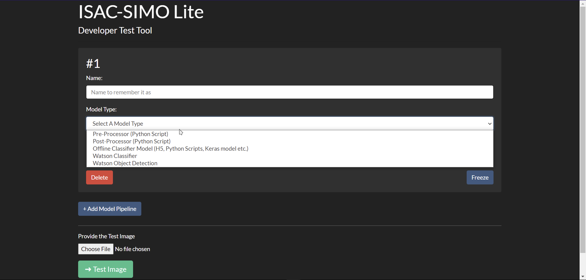
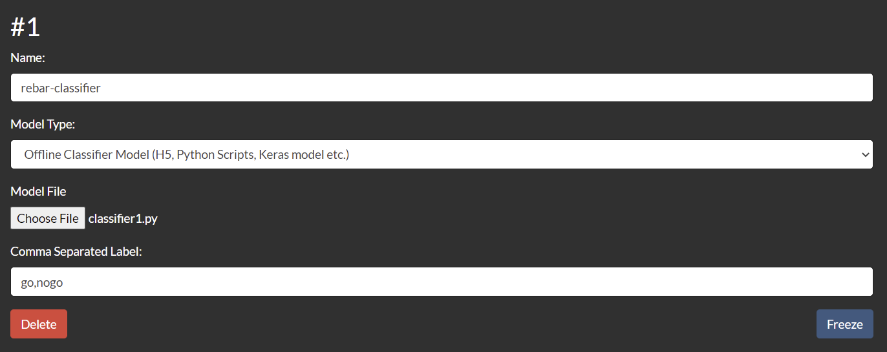
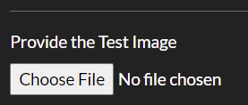

ISAC-SIMO-LITE
INTRODUCTION
Intelligent Supervision Assistant for Construction - Sistema Inteligente de Monitoreo de Obra
ISAC-SIMO is a system to validate that the intervention work done for homeowners has been done correctly and safely. It is a Build Change project supported by a grant from IBM.
ISAC-SIMO-Lite is a Developer Test Tool that provides a convenient developer test environment to work with pipeline models. Using this Web Application, users can add different models, watson classifiers, processors in a single page dashboard and quickly test images. It shows all the results of each model of the pipeline after the test is successful and any possible errors.
BEFORE YOU START
Before starting the project, you need to set these requirements.
- Python > 3.8.x
INSTALLATION
View the Open-Source GitHub repository for ISAC-SIMO Dashboard Lite.
First Clone this Project in a suitable directory & Change to project directory.
git clone https://github.com/Call-for-Code/ISAC-SIMO-Dashboard-Lite.git
cd ISAC-SIMO-Dashboard-Lite
Then, you will need to set up a virtual environment. The easiest way to setup is using pipenv. First, install pipenv using the following command.
pip3 install --upgrade setuptools
pip3 install pipenv
To activate the virtual environment shell you need to run these commands, followed by installing required packages. (Note that every time you run the application server, you need to be inside virtual env shell)
pipenv shell
pipenv install --skip-lock
Now, start the Application with:
python manage.py runserver --noreload
And visit http://127.0.0.1:8000/ in any modern browsers to open the application.
/static/folder should have proper read and write access to current users or groups.- During setup if package installation caused any error, please install them outside of pipenv and try running the server again.
- And, also note that most of the app controller are kept in
/main/views.py
GETTING STARTED
The application when loaded should look like this.

ADDING MODEL PIPELINE
You can add new models to the pipeline by clicking on the “+ Add Model Pipeline” button. After clicking on the button, it will add a new card where you can choose the type of model, provide it a name, and fill other fields as required.

Provide an appropriate name to the model and choose the type of model as shown below.

When you choose the model type, it will add new fields as required by that specific model. For example, a pre-processor needs a python script file, Watson classifier needs IBM API Keys, Collection ID etc. Fill the form as required.

You can remove any model from the pipeline by clicking on the “Delete” button. The “Freeze” button is useful to disable the card to prevent accidental clicks and changes.
More models can be added to the pipeline by clicking “+ Add Model Pipeline” as before and filling the forms.
PROVIDING THE TEST IMAGE
After you have added all the pipeline models properly, you can provide a test image which is used by the models and classifiers. You can choose the file using the field called “Provide the Test Image”.

Choose an appropriate image file for testing.
TESTING THE IMAGE
Now, the “➜ Test Image” button can be clicked to test the image using the provided pipeline of models. Any validation errors will be displayed properly with error messages and which model caused it.

Note: When you have already chosen a file or image in the web application and later modify it (locally) and try to run the test, it might not pass in chromium browsers (due to permissions issue). The application in that case will show “File has been modified” error and you need to choose the file again using the picker.
If all validation passes, it will start the testing process and on success show the results for each model.
Click on the “View Test Result ▽” button to toggle its result. It might contain an error message in red font color if the model did not run successfully. Else, it will show the result properly as required.
The pre-processor will show the processed image. The post-processor and classifier will show its JSON response. Similarly, Watson classifier and object detection will show its own response along with best result and score.
 This image shows the test result of the Pre-Processor
This image shows the test result of the Pre-Processor
 This image shows the test result of the Watson Classifier
This image shows the test result of the Watson Classifier
Results of the whole pipeline can be seen on the bottom of the page under the title of “Pipeline Result”. You can always modify the model, change the file or image and run the test again without reloading the page. Any unhandled errors might be found in Django Logs.
TESTING WITH MOBILE APP
Images can be tested either via web application or can also be tested with ISAC-SIMO Lite Mobile App. With the app, you need to provide the Local IP address of your running Django Project. To make the project accessible from local devices, you need to run the server using following command instead:
python manage.py runserver 0.0.0.0:8000 --noreload
Find your IP address with ipconfig or ifconfig or similar commands and enter that IP address in the mobile app. Then, continue with the Mobile Application by uploading or capturing images of different object types as required. The images will be sent to the running server in that IP address and will pass through all the pipeline models.
Make sure that, when you make changes in your model files, web app UI etc. you first need to test the image from the web app, so that the changes get stored in the application for the mobile app to use. Unless you reload the page, you can access the latest mobile api response (i.e. pipeline results) from the web app itself.
After you have tested the image from the mobile app, you can click on the "View Mobile Test Result" button. This will load the pipeline result of the latest test image and overrides the test results content.

If you need, the pipeline configuration is stored in the /static/temp/config.json file. The mobile test result (i.e. pipeline result) is stored in /static/temp/external_response.json file. All the processors, classifiers, test images are stored in the /static/temp folder.